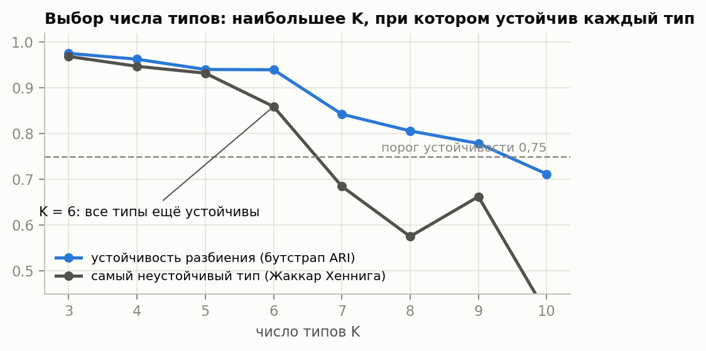
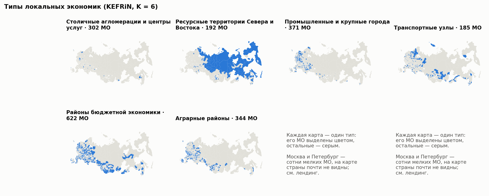
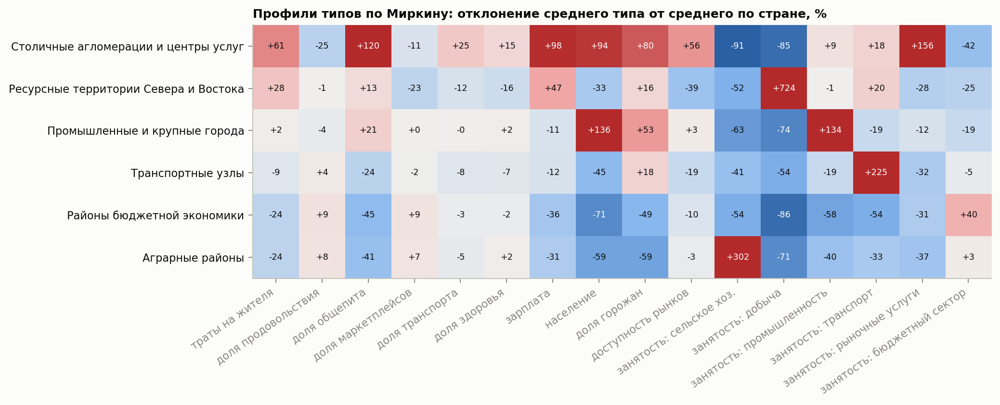
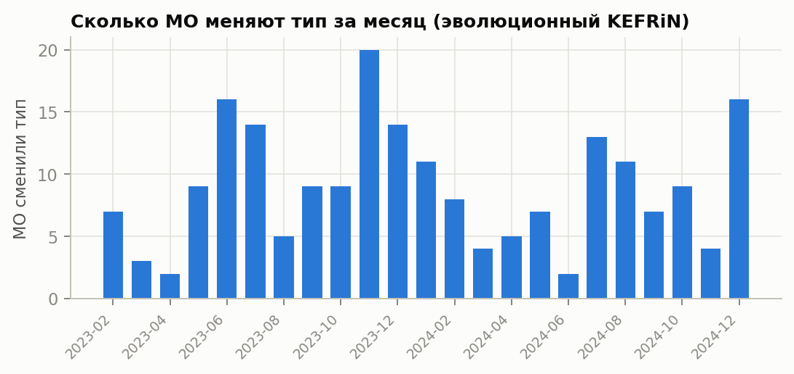
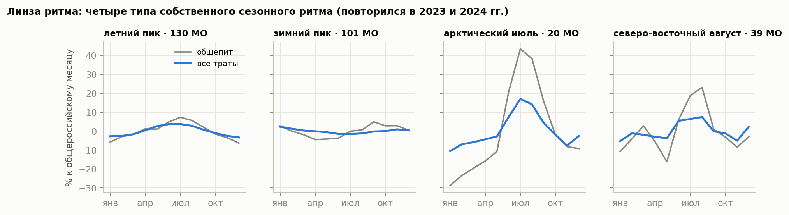

Методологический отчёт. Онлайн-конкурс СберИндекса 2026, трек «Кластеризация».
Код, конфигурации и интерактивный лендинг — в репозитории проекта (site/index.html).
Задача. Найти типы локальных экономик среди муниципальных образований (МО) России, проследить, как МО переходят между типами, и объяснить типы экономически.
Метод ДУЭТ в одной фразе. Муниципалитет описывается двумя взглядами: чем он живёт (зарплаты, отрасли, население — это атрибуты узла) и как в нём тратят (траектории безналичных трат жителей за 24 месяца — это рёбра сети). Тип — группа МО, похожих и по экономической базе, и по образу трат.
Результат.
Что нового. Атрибуты — производство и доходы, рёбра — потребление; поправка «место работы ≠ место жительства» для районов Москвы и Петербурга; восемь правил ребра с измеренным влиянием на типы; протокол выбора метода с контрольной группой; калиброванная синтетика для динамики; линза ритма; лендинг с паспортом МО и экономическими двойниками.
| Критерий | Где в отчёте |
|---|---|
| Простое объяснение методологии (15%) | §0, §1 (схема), формулы — в приложении А |
| Сетевая и атрибутивная структура (15%) | §3, §4 |
| Сравнение методов (15%) | §5 (13 методов: 8 в рейтинге выбора, 5 контрольных), §7 (динамика), приложение Б |
| ICVI: SW, CH, S_Dbw, AVI, AVU, MQ (15%) | §5.2 (включая BasicMQ), приложения А и Б |
| Интерпретация, воспроизводимость, обоснованность (30%) | §6–§9, §11 |
| Визуализация (10%) | лендинг site/index.html, рис. 1–6 |
s02_panel.py).s03_edges.py, s07_edge_effect.py, §4).s06_methods.py, s05_choose_k.py, §5).s11_types.py, §6).s08_dynamics.py, s09_synthetic.py, s12_transitions.py, §7).s10_rhythm.py, §8).Все гиперпараметры — в configs/pipeline.yaml, имена типов — в configs/typology.yaml; весь конвейер — python scripts/run.py.
Наша связка шагов оформлена как единый метод ДУЭТ (DUET — DUal-view Evolutionary Typology, «типология по двум взглядам с эволюционным отслеживанием»). Отдельные блоки опираются на опубликованные работы (KEFRiN — Shalileh, Mirkin, 2022; эволюционная кластеризация — Chakrabarti et al., 2006; AFFECT — Xu et al., 2014), а их сочетание, разделение ролей данных и протокол проверки предложены и проверены в этой работе.
| Источник | Что взято | Покрытие |
|---|---|---|
| СберИндекс, потребительские безналичные расходы на уровне МО (архив хакатона, CC BY-SA 4.0) | средние траты жителя в месяц, ₽: всего и 5 категорий | 2 190 МО, 2023-01…2024-12; 2 016 с полной историей |
| СберИндекс, индекс доступности рынков | объём доступного внешнего рынка, 0–1000 | 99,4% МО панели |
| СберИндекс, автодорожные связи МО | расстояние по дорогам между центрами МО | 5,9 млн пар |
| СберИндекс, справочник и границы МО | названия, тип, регион, ОКТМО, центры, полигоны | все МО панели |
| СберИндекс, индекс покупательской мобильности (API) | средняя дальность покупок, км | 279 МО (СЗФО) — только для проверки |
| Росстат, БД показателей МО через «Если быть точным» (CC BY 4.0) | население (всё и городское), среднемесячная зарплата и численность работников по разделам ОКВЭД2, 2024 г. | 99% МО |
Шестая часть корзины — «прочее» = все траты − пять категорий. Публичная выгрузка API ключуется по названию МО
(одноимённые МО разных регионов неразличимы), поэтому основой служит архив хакатона с territory_id.
В панели нет 12 регионов (в том числе Краснодарский край, Ростовская область, Крым, Дагестан). Росстат не публикует
занятость в отраслях с малым числом предприятий, поэтому доли шести укрупнённых отраслей в сумме дают в среднем 0,92.
Поправка «место работы ≠ место жительства». Росстат считает работников по месту работы. Во внутригородских территориях Москвы и Петербурга это бессмысленно: в «спальном» Дачном 2,5 тыс. рабочих мест на 70 тыс. жителей, и структура «занятости» описывает несколько местных организаций. Жители таких районов работают по всему городу, поэтому 242 внутригородским территориям присвоены общегородские доли отраслей и зарплата (взвешенно по числу работников).
| Блок | Признаки | Зачем |
|---|---|---|
| Доходы | логарифм средней зарплаты | уровень оплаты труда |
| Размер и урбанизация | логарифм населения, доля горожан | город или село, крупный или малый |
| Положение | логарифм индекса доступности рынков | удалённость, логистика |
| Структура занятости | доли: сельское хозяйство; добыча; промышленность, энергетика и строительство; транспорт; прочие рыночные услуги; бюджетный сектор | экономическая специализация (транспорт выделен отдельно: иначе железнодорожные узлы с 25–50% занятых в транспорте выглядят как «сервисные» столицы) |
| Уровень трат | логарифм трат на жителя минус медиана по всем МО в том же месяце | «сколько тратят» без инфляции и общероссийской сезонности |
Все признаки стандартизованы (z-оценки), хвосты обрезаны на ±4σ: иначе несколько добывающих МО с долей добычи выше 70% доминировали бы в расстояниях.
Почему структура трат — не в атрибутах, а в рёбрах. Тип локальной экономики — это прежде всего её база: что производят и сколько зарабатывают. Образ трат описывает, как эта база превращается в жизнь людей. Мы кладём базу в атрибуты, а потребление — в связи, и требуем, чтобы тип был согласован с обоими. Бонус: структура трат не входит в атрибуты, и её связь с типами можно проверить на контрольной типологии без данных о тратах (§6.3).
Одна сеть для типологии, 24 сети для динамики. Тип локальной экономики — устойчивая характеристика: экономическая база меняется годами, а не месяцами. Поэтому сама типология строится на одной сети, где ребро сравнивает траектории трат за все 24 месяца (DTW): так связь отражает образ трат, а не случайности одного месяца, и сезон не путается с типом. Помесячные сети (§7) строятся из корзины каждого месяца и отвечают на другой вопрос — кто и когда сменил тип. Разделение задано заранее: типология — по полной траектории, динамика — по месячным срезам, связанным памятью α.
Для каждого МО строится вектор или ряд потребления (8 каналов по месяцам: уровень трат, CLR-координаты шести долей корзины, остаток кривой Энгеля). CLR — центрированный логарифм отношения: доли в сумме дают 1, и обычные расстояния между ними искажены (геометрия Айчисона). Правила ребра:
Разрежение одно для всех: каждый МО связан с 15 самыми похожими (kNN, объединение), вес ребра — сходство.
| Правило | рёбер внутри региона | похожесть соседей: зарплата | уровень трат | доля маркетплейсов | занятость в добыче | модулярность |
|---|---|---|---|---|---|---|
| косинус профиля трат | 22% | 0,79 | 0,91 | 0,86 | 0,21 | 0,74 |
| гауссово ядро | 23% | 0,83 | 0,94 | 0,90 | 0,23 | 0,74 |
| корреляция рядов | 27% | 0,71 | 0,71 | 0,54 | 0,21 | 0,57 |
| лаговая корреляция ±2 мес. | 17% | 0,52 | 0,61 | 0,35 | 0,11 | 0,64 |
| DTW траекторий (основное) | 24% | 0,84 | 0,94 | 0,88 | 0,23 | 0,69 |
| близость по дорогам | 71% | 0,80 | 0,75 | 0,63 | 0,34 | 0,87 |
| сходство экономической базы (контроль) | 22% | 0,91 | 0,82 | 0,57 | 0,88 | 0,80 |
| слияние SNF: траты + база + дороги | 64% | 0,89 | 0,87 | 0,76 | 0,55 | 0,82 |
«Похожесть соседей» — корреляция показателя на двух концах ребра. Модулярность — у разбиения Leiden на этом графе.
Выводы. (1) Правила потребления делятся на два семейства, которые почти не пересекаются по рёбрам: профиль (косинус, ядро, DTW; общих рёбер 43–57%) и со-движение (корреляции; общих рёбер с профилем 4–9%). SNF действительно сочетает взгляды (общих рёбер: с DTW 18%, с базой 19%, с дорогами 42%), но география в нём перевешивает (64% рёбер внутри региона), а сообщества получаются такими плотными, что сеть подавляет признаки: KEFRiN на SNF-графе даёт силуэт 0,069 и почти другое разбиение (ARI с основным 0,24). Поэтому SNF оставлен как альтернатива, а не как основа: экономический тип не должен сводиться к «соседи по карте». (2) Соседи по профилю трат похожи по зарплате (0,77–0,81), хотя зарплата в рёбрах не участвует, — потребление действительно отражает экономику. (3) Дорожная сеть на 71% состоит из рёбер внутри региона: она описывает географию. (4) У 49% рёбер лаговой сети лучший сдвиг ненулевой, но на 24 месяцах это в основном шум: лаговая сеть слабее всех связана с экономикой (похожесть по зарплате 0,45).
Выбор: DTW. DTW сочетает уровень и структуру корзины, допускает сдвиг сезонных пиков на месяц-два (у северных и южных МО они приходятся на разные месяцы) и даёт высокую похожесть соседей по зарплате (0,81) и по уровню трат (0,94).
Таблица — в приложении Д.1. Правило ребра заметно влияет на результат. Близкие по смыслу правила дают близкие типологии (косинус профиля — почти та же, что DTW), со-движение рядов и лаговая корреляция сдвигают границы типов умеренно, а гауссово ядро, дороги и контрольный граф «сходства базы» — сильно. Ни одно правило не делает типы региональными: ARI с регионом ≈ 0,09.
Что сеть добавляет к признакам. KEFRiN на DTW-графе и k-means на тех же признаках согласуются с ARI 0,78: сеть меняет тип у 221 МО (11%). Доля соседей по тратам, попавших в тот же тип, растёт по всем МО с 51% до 53%, а у сменивших тип — с 32% до 48%: сеть переносит МО к тем, на кого он похож по образу жизни.
src/uklad/gnn.py):
GAE + k-means (Kipf & Welling, 2016) — графовый автоэнкодер сжимает МО в 16-мерный вектор, по которому можно
восстановить его связи, затем k-means; DAEGC (Wang et al., IJCAI 2019) — то же с графовым вниманием и самообучением
на собственных мягких метках; DMoN (Tsitsulin et al., JMLR 2023) — GNN, которая напрямую максимизирует модулярность
со штрафом за слипание кластеров.KEFRiN своими словами. Это k-means, у которого у каждого кластера два центра: в пространстве признаков и в
пространстве связей. МО относится к кластеру, к обоим центрам которого он в сумме ближе всего. Строка связей МО —
это строка модулярностной матрицы B = A − kkᵀ/2m: сколько у МО связей с каждым другим МО сверх ожидаемого
случайно. Вес сети ξ уравнивает суммарный разброс двух пространств. Косинусная версия сравнивает направления
векторов, а не длины: для строки связей это «с кем связан», а не «сколько связей». Реализация — своя, по формулам
статьи (src/uklad/partition.py): у кода авторов нет лицензии.
Формулы — в приложении А. AVI, AVU и модулярность сверены с кодом библиотеки Pattern Лаборатории СберИндекс:
расхождение не больше 10⁻¹⁵ на случайных графах. Под MQ мы понимаем модулярность Ньюмана — Гирвана (так метрика
называется в Pattern). Модульное качество Манкоридиса в варианте TurboMQ на неориентированном графе вырождается
в K · AVI и ничего к AVI не добавляет, поэтому считаем и исходный BasicMQ (Mancoridis et al., 1998): средняя
связность внутри типа μᵢ/Nᵢ² минус средняя связность между типами εᵢⱼ/(2NᵢNⱼ). Он штрафует межтиповые связи и
учитывает размеры типов. Если в рейтинге заменить модулярность на BasicMQ, KEFRiN-c остаётся 1-м по
пороговому агрегированию и 1-м по Борда (outputs/method_comparison/ranking_mq_basic.csv).
Индексы разных методов несравнимы «в лоб»: AVI случайного разбиения ≈ 1/K, CH растёт на сферических кластерах. Поэтому для каждого индекса считаем и z-оценку против перестановки меток (50 перестановок при тех же размерах кластеров): насколько разбиение лучше случайного.
| Метод | место (Алескеров) | место (Борда) | SW ↑ | CH ↑ | S_Dbw ↓ | AVI ↑ | AVU ↓ | MQ ↑ | бутстрап ↑ |
|---|---|---|---|---|---|---|---|---|---|
| KEFRiN-c (признаки+сеть) | 1 | 1 | 0,261 | 613 | 0,559 | 0,509 | 0,511 | 0,342 | 0,94 |
| KEFRiN-e (признаки+сеть) | 2 | 2 | 0,283 | 653 | 0,499 | 0,485 | 0,491 | 0,325 | 0,93 |
| k-means (признаки) | 3 | 3 | 0,285 | 656 | 0,484 | 0,460 | 0,484 | 0,303 | 0,97 |
| CANUS (признаки+сеть) | 4 | 5 | 0,188 | 477 | 0,569 | 0,481 | 0,544 | 0,343 | 0,59 |
| Ward (признаки) | 5 | 4 | 0,225 | 551 | 0,563 | 0,476 | 0,487 | 0,302 | 0,54 |
| GMM (признаки) | 5 | 6 | 0,121 | 370 | 0,663 | 0,449 | 0,526 | 0,267 | 0,64 |
| Leiden (сеть) | 7 | 6 | 0,081 | 287 | 0,765 | 0,854 | 0,508 | 0,652 | 0,50 |
| спектральная (сеть) | 7 | 8 | 0,047 | 242 | 0,627 | 0,853 | 0,527 | 0,605 | 0,78 |
В таблице — сырые значения индексов; места считаются не по ним, а по z-оценкам (таблица ниже). Бутстрап — 20 подвыборок по 80% МО; для CANUS — 5 (один запуск идёт около 5 минут). Места — пороговое агрегирование Алескерова (Aleskerov, Yakuba, Yuzbashev, 2007) по z-оценкам шести ICVI и бутстрап-устойчивости: каждый критерий ставит методу оценку 1/2/3 (лучшая, средняя, худшая треть), выше тот, у кого меньше «троек», при равенстве — меньше «двоек». В отличие от суммы мест (Борда), провал по одному индексу нельзя «купить» успехом по другому.
Выбор метода и честная оговорка. Правило выбора задано до сравнения: основной метод — первый по пороговому агрегированию. Это KEFRiN-c; правило Борда ставит его первым. Но честно скажем: три лидера почти равны. KEFRiN-c уступает k-means в компактности (силуэт 0,261 против 0,285) и устойчивости (0,94 против 0,97), выигрывая в согласии с сетью (MQ 0,342 против 0,303, AVI 0,509 против 0,460). Разбиения тройки близки: ARI KEFRiN-c с k-means 0,78, с KEFRiN-e 0,82. Все три — варианты «k-means по признакам с учётом сети или без неё», и выводы о типах от выбора между ними почти не зависят. Ещё одна оговорка: число типов (§5.4) и косинусная метрика подбирались на основном методе, что даёт ему небольшое преимущество; k-means при том же K устойчив не хуже (бутстрап 0,97). Сетевые методы (Leiden, спектральная) максимизируют модулярность, но их типы не компактны в признаках (SW ≈ 0) и неустойчивы; Ward и GMM неустойчивы; CANUS на наших данных уступает KEFRiN почти по всем индексам и неустойчив (бутстрап 0,59, по 5 подвыборкам).
Устойчивость рейтинга. Рейтинг пересчитан в восьми вариантах (Алескеров или Борда × с AVU или без × с бутстрапом или без): KEFRiN-c первый в 8 из 8. Таблица вариантов и z-оценки — в приложении Б. Третье правило, Коупленда (метод побеждает другой, если лучше по большинству критериев), ставит
KEFRiN-c 2-м, а первым — k-means: попарно k-means чуть чаще выигрывает по компактности. Это то же
наблюдение «лидеры почти равны», только с другой стороны (outputs/method_comparison/ranking_copeland.csv).
Проверка на внешней сети. Разбиения всех 13 методов оценены на сети, которая в их построении не участвовала:
15 ближайших МО по железной дороге (данные СберИндекса о связях, 1 262 МО со связями). Выше всех ожидаемо сетевые
методы и нейросети — их типы во многом географические. KEFRiN-c занимает 7-е место, k-means — 11-е:
сеть трат делает типы заметно связнее и на независимой сети (средняя z-оценка AVI, AVU и MQ 50 против
38), хотя география в рёбрах не участвует (outputs/method_comparison/external_railway.csv).
Почему не нейросеть. Пять методов добавлены после выбора как внешний контроль: DAEGC, Ward со связностью, DMoN, GAE + k-means, Louvain. Правило выбора основного метода задано до их добавления, поэтому рейтинг выбора выше — по восьми исходным методам. В общем рейтинге всех 13 методов (таблица ниже) KEFRiN-c остаётся на 1-м месте (делит его с KEFRiN-e, DAEGC); места относительны (трети по каждому критерию), и новые участники сдвигают пороги. По сути нейросети ведут себя как сетевые методы: у лучшей из них, DAEGC, модулярность MQ 0,632 против 0,342 у KEFRiN-c, но силуэт 0,068 против 0,261 и устойчивость на бутстрапе 0,62 против 0,94. Нейросеть группирует МО по тому, с кем они связаны, а не по тому, чем они живут, и от подвыборки к подвыборке даёт заметно разные типы. Для экономической типологии это хуже: у типа должен быть понятный портрет по признакам, и он не должен зависеть от случайного зерна. KEFRiN задаёт вес сети явно (ξ), а его центры читаются как профиль типа. Ward с ограничением связности — другой простой способ учесть сеть — неустойчив (бутстрап 0,54).
Полная таблица всех методов — в приложении Б.3.
Таблица — в приложении Д.2. Индексы SW и CH почти монотонно падают с K, S_Dbw падает — внутреннего оптимума у них нет, и это ожидаемо для данных без резких границ. Индексы здесь противоречат друг другу, и это нужно сказать прямо: силуэт лучше всего при K = 4, CH, AVI и модулярность — при K = 3, а S_Dbw и AVU всё время улучшаются с ростом K. Свести их в одно «лучшее K» нельзя без произвольных весов, поэтому решающим критерием выбрана устойчивость, которая не зависит от формы кластеров. Поэтому K выбирается по устойчивости: 20 подвыборок по 80% МО, ARI с полным разбиением и для каждого кластера — средний максимальный Жаккар (Hennig, 2007; > 0,75 — устойчивый паттерн). K = 6 — наибольшее K, при котором устойчив каждый тип (рис. 2): худший тип 0,86, при K = 7 — 0,68. Устойчивы и меньшие K, но берём наибольшее устойчивое: цель — как можно более подробная экономическая типология, а каждый лишний тип должен воспроизводиться на подвыборках. Так при K = 6 отделились транспортные узлы: при K = 5 (тот же метод и seed) 110 из 185 из них сливаются с ресурсными территориями, остальные расходятся по аграрным, промышленным и бюджетным. Порог 0,75 — общепринятый у Хеннига; в таблице для справки дан и более строгий 0,85.


| Тип (медианы) | МО | траты, ₽/мес | еда, % | общепит, % | маркетпл., % | зарплата, ₽ | население | горожане, % | доступность | с/х, % | добыча, % | промышл., % | бюджет, % |
|---|---|---|---|---|---|---|---|---|---|---|---|---|---|
| Столичные агломерации и центры услуг | 302 | 46 240 | 33,0 | 7,5 | 11,9 | 131 928 | 77 377 | 100 | 526 | 0,0 | 0,4 | 14,6 | 21,5 |
| Ресурсные территории Севера и Востока | 192 | 35 377 | 43,0 | 3,7 | 11,0 | 113 301 | 24 354 | 70 | 202 | 0,5 | 19,5 | 13,5 | 32,6 |
| Промышленные и крупные города | 371 | 29 095 | 42,2 | 4,0 | 13,8 | 66 408 | 61 143 | 88 | 336 | 0,4 | 0,0 | 38,0 | 34,6 |
| Транспортные узлы | 185 | 25 284 | 46,1 | 2,3 | 13,7 | 65 633 | 25 382 | 65 | 272 | 0,9 | 0,0 | 12,5 | 43,2 |
| Районы бюджетной экономики | 622 | 21 309 | 48,3 | 1,6 | 15,1 | 47 810 | 13 628 | 0 | 312 | 0,0 | 0,0 | 5,3 | 62,8 |
| Аграрные районы | 344 | 21 240 | 47,5 | 1,7 | 14,6 | 52 984 | 18 616 | 0 | 326 | 19,5 | 0,0 | 6,5 | 45,9 |

Формулы типов в терминах анализа формальных понятий и паттерны Алескерова–Мячина — в приложении В.
Проверка на отложенных признаках. Зарплата, занятость и население входят в признаки модели, поэтому то, что типы
«объясняют зарплату», само по себе ничего не доказывает. Чтобы проверка не была замкнутой, типология строилась заново
без одного блока признаков, и затем проверялось, объясняют ли такие типы показатель, которого модель не видела
(scripts/s23_validation.py, outputs/validation/held_out.csv). Типы, построенные без зарплаты, объясняют
73% разброса зарплаты (с зарплатой в модели — 76%); без занятости — в среднем 30% разброса
долей занятых по отраслям; случайные разбиения тех же размеров — меньше 1%. Все 11 отложенных показателей
объясняются значимо лучше случайного (p < 0,01). Значит, типы улавливают экономическую базу МО через остальные признаки
и сеть трат, а не повторяют её по построению.
Таблица — в приложении Д.3. η² — доля разброса показателя, объяснённая типами. Структура трат не входит в атрибуты, но входит в рёбра (DTW), поэтому для честной проверки рядом дана контрольная типология: k-means только по признакам Росстата и доступности рынков, без уровня трат и без сети — она не видит трат вовсе. Индекс мобильности — отдельный набор СберИндекса, в модели не участвует.
Контрольная типология объясняет структуру трат почти так же (общепит 68% против 71%, продовольствие 58% против 59%): то, что столицы тратят на общепит в разы больше, а бюджетные районы — почти половину на еду, следует из экономической базы МО; сеть добавляет к этому различия в доле транспорта и маркетплейсов.
Индекс покупательской мобильности (медиана, км): столичные агломерации и центры услуг — 4,8 км, промышленные и крупные города — 1,2 км, ресурсные территории севера и востока — 0,8 км, транспортные узлы — 0,6 км, аграрные районы — 0,6 км, районы бюджетной экономики — 0,5 км. Он убывает вместе с урбанизацией типа.
Тип — это ещё и уровень жизни. Медианные траты на жителя каждого типа относительно медианы России по месяцам
(scripts/s13_checks.py, среднее за год, чтобы сезон не мешал):
Таблица — в приложении Д.4. Разрыв между самым богатым и самым бедным типом за год вырос с 97 до 101 п. п. (бутстрап по МО внутри типов, 1000 повторов: изменение от +2,9 до +4,9 п. п., 95% интервал при фиксированной типологии; неопределённость самих типов он не учитывает — рост значим, но невелик): столичные агломерации и центры услуг уходят вперёд, аграрные районы отстают сильнее. Разброс логарифма трат между МО (σ-сходимость) растёт с 0,314 до 0,325: неравенство между муниципалитетами за два года не сокращается. Тип объясняет 72% этого разброса (в оба года) — почти всё неравенство в тратах лежит между типами, а не внутри них.
Коротко. 24 помесячные сети, три способа отслеживания; вес памяти α = 0,5 выбран по таблице вариантов и подтверждён дважды: на синтетике с известной истиной и адаптивным методом AFFECT, который сам выбирает α ≈ 0,55.
Помесячные сети. Для месяца t атрибуты — экономическая база (постоянна) и уровень трат месяца t; рёбра — kNN по сходству корзины месяца t (скользящее среднее за 3 месяца, чтобы разовые всплески не рвали связи).
Три способа отследить типы.
Смена типа засчитывается как устойчивая, если и старый, и новый тип держатся не меньше трёх месяцев.
| Способ | AMI соседних месяцев | смен в месяц | МО без смен | устойчивых переходов | доля устойчивых | SW (медиана) | MQ (медиана) | типов |
|---|---|---|---|---|---|---|---|---|
| независимо по месяцам | 0,955 | 1,40% | 88,2% | 166 | 26% | 0,262 | 0,319 | 6 |
| эволюционный KEFRiN, α=0.25 | 0,982 | 0,48% | 93,8% | 164 | 74% | 0,260 | 0,322 | 6 |
| эволюционный KEFRiN, α=0.5 | 0,984 | 0,44% | 93,9% | 151 | 74% | 0,260 | 0,323 | 6 |
| эволюционный KEFRiN, α=0.75 | 0,989 | 0,31% | 94,6% | 122 | 85% | 0,259 | 0,325 | 6 |
| эволюционный KEFRiN, адаптивный α (AFFECT) | 0,985 | 0,42% | 94,1% | 146 | 76% | 0,260 | 0,324 | 6 |
| temporal Leiden, ω=0.5 | 0,747 | 20,31% | 0,9% | 3551 | 38% | −0,027 | 0,728 | 18 |
| temporal Leiden, ω=1.0 | 0,833 | 9,05% | 32,4% | 2118 | 50% | −0,027 | 0,721 | 11 |
При независимой кластеризации 1,4% МО меняют тип каждый месяц, и только 26% смен устойчивы — это шум. Память α = 0,5 снижает долю смен до 0,44% в месяц (на 68%), 74% из них устойчивы, а качество каждого месяца почти не меняется (SW 0,260 против 0,262, MQ 0,323 против 0,319). Temporal Leiden дробит МО на много мелких сообществ с отрицательным силуэтом. Сравнение с ним неравное: число сообществ Leiden задать нельзя (получается 11–18 вместо 6), поэтому его строка показывает другой подход, а не проигрыш при равных условиях.
Проверка выбора α данными. α = 0,5 выбрана по таблице вариантов, то есть вручную. AFFECT подбирает вес
истории сам, без нашего участия, и получает α от 0,50 до 0,58 (медиана 0,55): данные сами
выбирают примерно ту же память. Результат AFFECT почти совпадает с основным (ARI меток за 24 месяца 1,00),
поэтому основным оставлен более простой вариант с постоянной α. Есть и вторая причина: AFFECT оптимизирует точность
оценки среза, а не скорость обнаружения перехода. На спокойных данных он копит память и замечает настоящий переход
позже, чем постоянная α = 0,5 (проверяется в tests/test_pipeline.py на синтетической панели).
Проверка на синтетике с известной истиной (s09_synthetic.py). На реальных данных нельзя узнать, какие смены
настоящие, поэтому способы отслеживания сравнены на синтетике, откалиброванной по реальной типологии: центры типов
и устойчивые отклонения МО — из данных, помесячный шум уровня трат — как в реальных рядах; в 12-м месяце 5% МО
по-настоящему переходят в ближайший тип. 800 МО, 3 повтора, два уровня шума.
| Шум | Способ | NMI с истиной | ложных смен на МО | мигранты найдены сразу | через 2 мес. | через 4 мес. |
|---|---|---|---|---|---|---|
| калиброванный | независимо | 0,77 | 3,35 | 65% | 58% | 52% |
| калиброванный | эволюционный, α=0.25 | 0,84 | 0,10 | 81% | 89% | 91% |
| калиброванный | эволюционный, α=0.5 | 0,83 | 0,06 | 46% | 87% | 89% |
| калиброванный | эволюционный, α=0.75 | 0,83 | 0,02 | 16% | 62% | 81% |
| шум ×2 по всем признакам | независимо | 0,70 | 4,54 | 69% | 78% | 65% |
| шум ×2 по всем признакам | эволюционный, α=0.25 | 0,79 | 1,33 | 78% | 89% | 90% |
| шум ×2 по всем признакам | эволюционный, α=0.5 | 0,81 | 0,75 | 48% | 87% | 88% |
| шум ×2 по всем признакам | эволюционный, α=0.75 | 0,81 | 0,31 | 17% | 59% | 83% |
Память нужна: без неё метод не отличает переход от шума (3,4 ложных смен на МО за два года). Чем больше α, тем меньше ложных смен, но тем позже замечается настоящий переход. α = 0,5 через два месяца находит 87% настоящих переходов (α = 0,25 — 89%) и даёт на 38% меньше ложных смен, чем α = 0,25.
События MONIC (Spiliopoulou et al., 2006) между январём 2023 и декабрём 2024: все 6 типов «выживают», распадов и слияний нет. Это содержательный результат: экономическая структура страны за два года не перестроилась, менялись отдельные пограничные МО.
Направленные и возвратные переходы. Правило «≥ 3 месяцев» отсекает шум, но не сезонность: северный город может
полгода жить в одном типе и к зиме вернуться в свой. Поэтому переходы разделены (s12_transitions.py): тип МО в начале
(мода января–марта 2023) и в конце (мода октября–декабря 2024) различаются — направленный переход, совпадают — возвратный.
Таблица направленных переходов по парам типов — в приложении Г.1.
Из 123 МО, менявших тип, 88 сменили его насовсем, 35 вернулись. Насколько эти смены надёжны. Для каждого МО, сменившего тип насовсем, «отрыв» к новому типу (разница
расстояний до центров старого и нового типа в пространстве KEFRiN) сравнен с тем же показателем у МО того же исходного
типа, которые тип не меняли; точка смены выбирается по данным, поэтому статистика — максимум по всем точкам разрыва
(outputs/validation/transitions_significance.csv). По отдельности значимы 28 из 88 переходов при
4,4 ожидаемых случайно (биномиальный p ≈ 10⁻¹⁵); медианный отрыв у сменивших тип в 3,6 раза больше,
чем у не менявших. Как группа смены реальны, но после строгой поправки на множественность (Бенджамини — Хохберг, 5%)
ни один отдельный переход не доказан. Поэтому конкретные МО из таблицы переходов — кандидаты для проверки, а не
установленные факты. Направленные переходы
объясняются динамикой относительного уровня трат: МО, поднимающиеся по лестнице типов (к крупным городам и
агломерациям), как правило, прибавили к своему уровню трат относительно страны, опускающиеся — потеряли.
Общий сдвиг, не меняющий типов, — волна маркетплейсов: медианная доля маркетплейсов выросла с 9,3% до 19,2% трат, доля продовольствия снизилась с 45,3% до 42,4%. На лендинге это видно в «ландшафте Энгеля»: облако МО опускается, а каждый декабрь прыгает вправо (траты на 20% выше обычного месяца).

Ритм МО — помесячные траты за вычетом общероссийского месяца и собственного линейного тренда, усреднённые по двум годам. Своим ритм признаётся, если (1) профиль 2023 г. коррелирует с профилем 2024 г. сильнее 95-го перцентиля перестановочного нуля (те же корреляции для случайных пар «2023 одного МО — 2024 другого»; порог 0,64) и (2) амплитуда выше медианы. Таких МО 290 (14%). Их профили сгруппированы k-means (K по силуэту).
Таблица — в приложении Д.5.

Арктический ритм — самый сильный сигнал в данных: в июле траты на 17% выше обычного, общепит — на 43%.
Проверка трактовок. Разные причины сезонности оставляют разный след в корзине: завоз поднимает продовольствие,
приток людей — услуги (общепит, здоровье), сезонная добыча связана с долей занятых в добыче. Ниже — средний профиль ритма
в его пиковый месяц по каждой категории, той же методикой, что и сам ритм (отклонение от общероссийского месяца
за вычетом собственного тренда МО, ×100; scripts/s13_checks.py). Поэтому «все траты» и «общепит» здесь совпадают с числами
выше, а размах в таблице ритмов (пик минус спад) больше пика.
Состав корзины в пиковый месяц по каждой трактовке — в приложении Г.2.
Где наш метод не лучше простых. k-means на тех же признаках устойчивее на подвыборках (0,97 против 0,94), компактнее (силуэт 0,285 против 0,261) и выигрывает по правилу Коупленда. Сетевые методы и нейросети сильнее по модулярности. Наш выбор — компромисс: типы почти так же компактны, как у k-means, и при этом согласованы с сетью трат. Если нужна только компактность по признакам, k-means достаточно.
Shalileh S., Mirkin B. Community partitioning over feature-rich networks using an extended K-means method // Entropy. 2022. · Shalileh S. A filtered gradient descent clustering method to recover communities in attributed networks // IEEE Access. 2025. · Shalileh S., Antonov E., Tsyplakova D. Profiling consumption using attributed network clustering // Complex Networks & Their Applications XIV. 2026. · Biswas A., Biswas B. Defining quality metrics for graph clustering evaluation // Expert Systems with Applications. 2017. · Halkidi M., Vazirgiannis M. Clustering validity assessment: finding the optimal partitioning of a data set // ICDM. 2001. · Rousseeuw P. Silhouettes // J. Comput. Appl. Math. 1987. · Caliński T., Harabasz J. A dendrite method for cluster analysis // Comm. Stat. 1974. · Newman M., Girvan M. Finding and evaluating community structure in networks // Phys. Rev. E. 2004. · Mancoridis S. et al. Using automatic clustering to produce high-level system organizations of source code // IWPC. 1998. · Aleskerov F., Yakuba V., Yuzbashev D. A «threshold aggregation» of three-graded rankings // Math. Social Sciences. 2007. · Алескеров Ф. Т., Белоусова В. Ю., Егорова Л. Г., Миркин Б. Г. Анализ паттернов в статике и динамике // Бизнес-информатика. 2013. · Мячин А. Л. Pattern analysis in parallel coordinates based on pairwise comparison of parameters // Automation and Remote Control. 2019. · Ganter B., Wille R. Formal Concept Analysis. Springer, 1999. · Kuznetsov S. O. On stability of a formal concept // Ann. Math. Artif. Intell. 2007. · Mirkin B. Clustering: A Data Recovery Approach. CRC, 2012. · Hennig C. Cluster-wise assessment of cluster stability // CSDA. 2007. · Chakrabarti D., Kumar R., Tomkins A. Evolutionary clustering // KDD. 2006. · Mucha P. et al. Community structure in time-dependent, multiscale, and multiplex networks // Science. 2010. · Spiliopoulou M. et al. MONIC: modeling and monitoring cluster transitions // KDD. 2006. · Traag V. et al. From Louvain to Leiden // Sci. Rep. 2019. · Aitchison J. The statistical analysis of compositional data. 1986. · Sakoe H., Chiba S. Dynamic programming algorithm optimization for spoken word recognition // IEEE TASSP. 1978. · Zelnik-Manor L., Perona P. Self-tuning spectral clustering // NIPS. 2004. · Xu K., Kliger M., Hero A. Adaptive evolutionary clustering // Data Min. Knowl. Disc. 2014. · Wang B. et al. Similarity network fusion for aggregating data types on a genomic scale // Nature Methods. 2014. · Kipf T., Welling M. Variational graph auto-encoders // NIPS Workshop. 2016. · Wang C. et al. Attributed graph clustering: a deep attentional embedding approach // IJCAI. 2019. · Tsitsulin A. et al. Graph clustering with graph neural networks // JMLR. 2023. · Blondel V. et al. Fast unfolding of communities in large networks // J. Stat. Mech. 2008.
| Что | Источник | Как использовано |
|---|---|---|
| KEFRiN (кластеризация признаков и сети) | Shalileh, Mirkin, 2022 | своя реализация по формулам статьи (src/uklad/partition.py); код авторов не используется |
| CANUS | Shalileh, 2025 | код автора (github.com/Sorooshi/CANUS, коммит 754622a), скачивается скриптом, в репозиторий не включён |
| AVI, AVU, MQ | библиотека Pattern Лаборатории СберИндекс | своя реализация, сверена с Pattern до 10⁻¹⁵ (tests/test_quality.py) |
| Эволюционная кластеризация, AFFECT | Chakrabarti et al., 2006; Xu, Kliger, Hero, 2014 | своя реализация (src/uklad/tracking.py) |
| SNF, GAE, DAEGC, DMoN | Wang et al., 2014; Kipf, Welling, 2016; Wang et al., 2019; Tsitsulin et al., 2023 | свои компактные реализации (graphs.py, deep.py) |
| Пороговое агрегирование, паттерны, FCA | Алескеров и др.; Мячин; Ganter, Wille; Кузнецов | своя реализация |
| Leiden, Louvain, k-means, Ward, GMM, спектральная | leidenalg, igraph, scikit-learn | библиотеки |
Самостоятельно: постановка «атрибуты — производство и доходы, рёбра — потребление», поправка «место работы ≠ место жительства» для районов Москвы и Петербурга, сравнение восьми правил ребра и их влияния на типологию, протокол выбора метода (рейтинг выбора и контрольные методы), калиброванная синтетика для проверки динамики, линза ритма с перестановочным тестом, интерпретация типов и лендинг.
pip install -r requirements.txt
python scripts/run.py # скачивание (SHA-256), панель, графы, методы, динамика, интерпретация, рисунки, лендинг
python scripts/report.py # этот отчёт: report/uklad_methodology.md и .pdf
pytest -q tests # проверки индексов качества, DTW, лаговой корреляции
Контрольные суммы: python scripts/s19_checksums.py записывает SHA-256 всех файлов outputs/ в outputs/CHECKSUMS.sha256,
python scripts/s19_checksums.py --check после повторного прогона показывает, какие файлы не совпали байт в байт.
Seed = 42 во всех случайных шагах; гиперпараметры — configs/pipeline.yaml; CANUS — коммит 754622a.
Все числа и таблицы этого отчёта подставляются из outputs/ при сборке (scripts/report.py).
Протокол проверки в свежей копии репозитория, со скачиванием данных с нуля, — docs/reproduce_check.md.
Обозначения: K кластеров C₁…C_K, центры c_k, общий центр c̄, N объектов; A — симметричная взвешенная матрица смежности; S_ab = Σ_{i∈C_a} Σ_{j∈C_b} A_ij (внутренние рёбра входят дважды); out_a = Σ_{b≠a} S_ab; 2m = Σ_ab S_ab.
Б.1. Почему места считаются по z-оценкам. Сырые индексы зависят от размеров кластеров: метод, который делает один огромный и несколько мелких типов, получает «хороший» S_Dbw или AVU почти даром. Поэтому каждый индекс сравнивается со случайной перестановкой тех же меток (те же размеры типов, случайные МО): z = (индекс − среднее по перестановкам) / стандартное отклонение, знак выбран так, что больше — лучше. z-оценка говорит, насколько разбиение лучше случайного с теми же размерами. Отсюда расхождения с сырой таблицей: например, по сырому S_Dbw k-means лучше KEFRiN-c (0,484 против 0,559), но по z-оценке KEFRiN-c дальше от случайного (66,1 против 56,3).
| Метод | z SW | z CH | z S_Dbw | z AVI | z AVU | z MQ |
|---|---|---|---|---|---|---|
| KEFRiN-c (признаки+сеть) | 44,9 | 1 634,9 | 66,1 | 125,7 | 10,4 | 130,8 |
| KEFRiN-e (признаки+сеть) | 46,9 | 1 719,8 | 56,1 | 122,5 | 11,1 | 124,5 |
| k-means (признаки) | 46,6 | 1 847,7 | 56,3 | 111,0 | 11,2 | 114,3 |
| CANUS (признаки+сеть) | 30,2 | 1 275,1 | 68,1 | 116,6 | −13,8 | 123,8 |
| Ward (признаки) | 38,1 | 1 617,1 | 45,7 | 116,6 | 16,0 | 113,2 |
| GMM (признаки) | 22,5 | 1 314,8 | 69,3 | 110,7 | 3,4 | 111,2 |
| Leiden (сеть) | 14,1 | 1 012,4 | 30,8 | 233,8 | 1,6 | 209,0 |
| спектральная (сеть) | 6,9 | 818,8 | 20,2 | 255,7 | −44,8 | 188,8 |
Б.2. Устойчивость рейтинга. Место метода зависит от того, как свести шесть индексов в одно число. Поэтому рейтинг пересчитан в восьми вариантах: правило Алескерова или Борда × с индексом AVU или без × с бутстрап-устойчивостью или без. KEFRiN-c занимает первое место в 8 из 8 вариантов:
| Метод | Алескеров: с AVU, с бутстрапом | Борда: с AVU, с бутстрапом | Алескеров: с AVU, без бутстрапа | Борда: с AVU, без бутстрапа | Алескеров: без AVU, с бутстрапом | Борда: без AVU, с бутстрапом | Алескеров: без AVU, без бутстрапа | Борда: без AVU, без бутстрапа | первых мест |
|---|---|---|---|---|---|---|---|---|---|
| KEFRiN-c (признаки+сеть) | 1 | 1 | 1 | 1 | 1 | 1 | 1 | 1 | 8 |
| KEFRiN-e (признаки+сеть) | 2 | 2 | 2 | 1 | 2 | 2 | 2 | 2 | 1 |
| k-means (признаки) | 3 | 3 | 3 | 3 | 4 | 3 | 4 | 3 | 0 |
| CANUS (признаки+сеть) | 4 | 5 | 4 | 6 | 3 | 4 | 3 | 4 | 0 |
| Ward (признаки) | 5 | 4 | 4 | 4 | 6 | 7 | 5 | 6 | 0 |
| Leiden (сеть) | 7 | 6 | 7 | 5 | 8 | 6 | 7 | 4 | 0 |
| GMM (признаки) | 5 | 6 | 6 | 7 | 5 | 7 | 6 | 8 | 0 |
| спектральная (сеть) | 7 | 8 | 8 | 8 | 7 | 5 | 7 | 7 | 0 |
Б.3. Все 13 методов, включая контрольные.
| Метод (все 13) | место, Алескеров | место, Борда | SW ↑ | MQ ↑ | AVI ↑ | бутстрап ↑ |
|---|---|---|---|---|---|---|
| KEFRiN-c (признаки+сеть) | 1 | 2 | 0,261 | 0,342 | 0,509 | 0,94 |
| KEFRiN-e (признаки+сеть) | 1 | 3 | 0,283 | 0,325 | 0,485 | 0,93 |
| DAEGC (GNN) | 1 | 6 | 0,068 | 0,632 | 0,797 | 0,62 |
| Ward со связностью (признаки+сеть) | 4 | 5 | 0,184 | 0,349 | 0,512 | 0,54 |
| DMoN (GNN) | 5 | 1 | 0,070 | 0,653 | 0,819 | 0,63 |
| k-means (признаки) | 6 | 4 | 0,285 | 0,303 | 0,460 | 0,97 |
| GMM (признаки) | 7 | 9 | 0,121 | 0,267 | 0,449 | 0,64 |
| Ward (признаки) | 8 | 7 | 0,225 | 0,302 | 0,476 | 0,54 |
| GAE + k-means (GNN) | 9 | 8 | 0,065 | 0,634 | 0,816 | 0,52 |
| CANUS (признаки+сеть) | 10 | 11 | 0,188 | 0,343 | 0,481 | 0,59 |
| Louvain (сеть) | 11 | 9 | 0,064 | 0,645 | 0,857 | 0,52 |
| спектральная (сеть) | 12 | 13 | 0,047 | 0,605 | 0,853 | 0,78 |
| Leiden (сеть) | 13 | 12 | 0,081 | 0,652 | 0,854 | 0,50 |
Каждый показатель разбит на интервалы («верхняя четверть», «ниже медианы» и т. д.). Для каждого типа ищется понятие FCA — набор условий, общих для группы МО, — с наибольшей точностью (какая доля МО, удовлетворяющих условию, принадлежит типу) при покрытии не ниже 20%. Устойчивость понятия по Кузнецову (2007) — доля случайных подмножеств его МО, сохраняющих то же описание (оценка Монте-Карло): высокая устойчивость значит, что описание не держится на нескольких МО.
| Тип | Формула типа | точность | покрытие | устойчивость |
|---|---|---|---|---|
| Столичные агломерации и центры услуг | зарплата: верхняя четверть и доля горожан: верхняя четверть и доступность рынков: верхняя четверть | 98% | 80% | 0,36 |
| Ресурсные территории Севера и Востока | доля маркетплейсов: нижняя четверть и зарплата: верхняя четверть и население: нижняя четверть | 94% | 25% | 0,73 |
| Промышленные и крупные города | доля горожан: верхняя четверть и занятость в промышленности: верхняя четверть и городской округ | 88% | 35% | 1,00 |
| Транспортные узлы | траты на жителя: выше медианы и доля общепита: ниже медианы и занятость в транспорте: верхняя четверть | 80% | 24% | 0,82 |
| Районы бюджетной экономики | траты на жителя: ниже медианы и занятость в сельском хозяйстве: ниже медианы и занятость в бюджетном секторе: верхняя четверть | 99% | 32% | 0,41 |
| Аграрные районы | траты на жителя: нижняя четверть и доступность рынков: выше медианы и занятость в сельском хозяйстве: верхняя четверть | 89% | 29% | 0,97 |
Формулы ресурсных территорий и транспортных узлов включают показатели трат (мало маркетплейсов; высокие траты при малой доле общепита) — это след сети трат: KEFRiN собрал в эти типы МО, похожие и образом потребления.
Порядково-инвариантная паттерн-кластеризация группирует МО по порядку показателей, без метрики: два МО в одном паттерне, если у них одинаково упорядочены пять долей корзины (нормированных ранг-процентилем по стране). Получилось 134 паттерна, 28 крупных (≥ 20 МО) покрывают 56% МО. Паттерн «общепит > здоровье > транспорт > маркетплейсы > продовольствие» почти целиком состоит из столичных агломераций и крупных городов; паттерны, где маркетплейсы или продовольствие на первом месте, — из районов бюджетной экономики и аграрных районов. Согласие паттернов с типами умеренное: порядок трат различает город и село, но не различает ресурсный и бюджетный районы — для этого нужна экономическая база.
| Направленный переход | МО | изменение уровня трат (медиана) | примеры |
|---|---|---|---|
| Столичные агломерации и центры услуг → Промышленные и крупные города | 15 | +5,1% | Лермонтов, Жуковский, Тарусский, Гатчинский, Кировский, Тосненский |
| Промышленные и крупные города → Столичные агломерации и центры услуг | 14 | +4,4% | Красноярск, Владивостокский, Хабаровск, Иркутск, Калининград, Гурьевский |
| Транспортные узлы → Ресурсные территории Севера и Востока | 12 | +4,1% | Сортавальский, Верхнеколымский, Могочинский, Артемовский, Дальнереченский, Спасск-Дальний |
| Районы бюджетной экономики → Аграрные районы | 9 | −4,2% | Ардатовский, Черемшанский, Киясовский, Родинский, Табунский, Куртамышский |
| Промышленные и крупные города → Районы бюджетной экономики | 6 | −7,4% | Агидель, Ядринский, Ахтубинский, Мамоновский, Верхнекамский, Духовщинский |
| Аграрные районы → Районы бюджетной экономики | 3 | +3,9% | Первомайский, Славский, Крутинский |
| Ресурсные территории Севера и Востока → Промышленные и крупные города | 3 | +3,6% | Учалинский, Жигаловский, Полярные Зори |
| Транспортные узлы → Районы бюджетной экономики | 3 | −6,7% | Юрьянский, Алапаевск, Асиновский |
| Районы бюджетной экономики → Ресурсные территории Севера и Востока | 3 | +13,9% | Майминский, Мегино-Кангаласский, Ульчский |
| Промышленные и крупные города → Ресурсные территории Севера и Востока | 3 | +5,4% | Каларский, Уссурийский, Невьянский |
| Транспортные узлы → Промышленные и крупные города | 2 | +4,7% | Мариинский, Тогучинский |
| Ресурсные территории Севера и Востока → Районы бюджетной экономики | 2 | −9,5% | Малышевский, Пластовский |
| Аграрные районы → Промышленные и крупные города | 2 | +6,3% | Минераловодский, Искитимский |
| Ресурсные территории Севера и Востока → Аграрные районы | 2 | −5,9% | Игринский, Каракулинский |
| Транспортные узлы → Аграрные районы | 2 | −4,7% | Сармановский, Курагинский |
| Промышленные и крупные города → Аграрные районы | 1 | −10,3% | Слободской |
| Аграрные районы → Столичные агломерации и центры услуг | 1 | +10,4% | Приозерский |
| Районы бюджетной экономики → Промышленные и крупные города | 1 | +6,6% | Конаковский |
| Районы бюджетной экономики → Транспортные узлы | 1 | −3,7% | Ольховский |
| Районы бюджетной экономики → Столичные агломерации и центры услуг | 1 | +16,9% | Светлогорский |
| Промышленные и крупные города → Транспортные узлы | 1 | +1,9% | Абакан |
| Ресурсные территории Севера и Востока → Столичные агломерации и центры услуг | 1 | +0,4% | Сургут |
| ритм | МО | пиковый месяц | все траты, % | продовольствие, % | общепит, % | здоровье, % | маркетплейсы, % | транспорт, % | добыча > 5% занятых, доля МО | то же по стране |
|---|---|---|---|---|---|---|---|---|---|---|
| Летний пик | 130 | 7 | +3,7 | +1,5 | +7,3 | +3,2 | +1,8 | +5,9 | 25% | 10% |
| Зимний пик | 101 | 1 | +2,3 | +0,8 | +2,8 | +1,6 | +3,2 | +2,0 | 9% | 10% |
| Арктический июль | 20 | 7 | +17,0 | +2,2 | +43,5 | +45,3 | +27,9 | +22,2 | 50% | 10% |
| Северо-восточный август | 39 | 8 | +7,4 | +1,7 | +23,1 | +15,5 | +3,4 | +3,0 | 31% | 10% |
| Граф в KEFRiN | ARI с основной типологией | ARI с регионом | SW | AVI (свой граф) | MQ (свой граф) |
|---|---|---|---|---|---|
| сходство экономической базы (контроль) | 0,86 | 0,07 | 0,265 | 0,914 | 0,719 |
| корреляция рядов | 0,92 | 0,08 | 0,266 | 0,403 | 0,245 |
| косинус профиля трат | 0,93 | 0,08 | 0,262 | 0,485 | 0,333 |
| DTW траекторий (основное) | 1,00 | 0,08 | 0,261 | 0,509 | 0,342 |
| лаговая корреляция ±2 мес. | 0,87 | 0,07 | 0,261 | 0,397 | 0,261 |
| гауссово ядро | 0,40 | 0,08 | 0,089 | 0,800 | 0,591 |
| близость по дорогам | 0,78 | 0,08 | 0,255 | 0,508 | 0,350 |
| слияние SNF: траты + база + дороги | 0,24 | 0,10 | 0,069 | 0,915 | 0,722 |
| без сети (k-means) | 0,78 | 0,06 | 0,285 | 0,460 | 0,303 |
| K | SW | CH | S_Dbw | AVI | AVU | MQ | бутстрап ARI | худший тип (Хенниг) | типов со строгим Жаккаром > 0,85 |
|---|---|---|---|---|---|---|---|---|---|
| 3 | 0,279 | 732 | 0,732 | 0,793 | 0,667 | 0,427 | 0,98 | 0,97 | 3 |
| 4 | 0,285 | 675 | 0,677 | 0,694 | 0,550 | 0,419 | 0,96 | 0,95 | 4 |
| 5 | 0,245 | 645 | 0,590 | 0,578 | 0,544 | 0,362 | 0,94 | 0,93 | 5 |
| 6 | 0,261 | 613 | 0,559 | 0,509 | 0,511 | 0,342 | 0,94 | 0,86 | 6 |
| 7 | 0,241 | 560 | 0,518 | 0,513 | 0,514 | 0,359 | 0,84 | 0,68 | 4 |
| 8 | 0,241 | 537 | 0,470 | 0,489 | 0,509 | 0,362 | 0,81 | 0,58 | 3 |
| 9 | 0,201 | 499 | 0,441 | 0,471 | 0,507 | 0,366 | 0,78 | 0,66 | 4 |
| 10 | 0,193 | 466 | 0,417 | 0,442 | 0,504 | 0,360 | 0,71 | 0,41 | 2 |
| Показатель | η², итоговые типы | η², типы только по Росстату | МО |
|---|---|---|---|
| доля продовольствия | 0,59 | 0,58 | 2016 |
| доля общепита | 0,71 | 0,68 | 2016 |
| доля маркетплейсов | 0,17 | 0,09 | 2016 |
| доля транспорта | 0,22 | 0,20 | 2016 |
| доля здоровья | 0,25 | 0,20 | 2016 |
| отклонение от кривой Энгеля | 0,16 | 0,09 | 2016 |
| индекс покупательской мобильности (СберИндекс) | 0,54 | 0,52 | 279 |
| Тип | 2023, % к медиане России | 2024 |
|---|---|---|
| Столичные агломерации и центры услуг | 82,8 | 85,8 |
| Ресурсные территории Севера и Востока | 44,2 | 40,8 |
| Промышленные и крупные города | 14,2 | 17,3 |
| Транспортные узлы | 2,3 | 1,8 |
| Районы бюджетной экономики | −14,2 | −14,7 |
| Аграрные районы | −14,3 | −15,3 |
| Ритм | МО | месяц пика | размах трат (пик − спад) | регионы | примеры (самые повторяемые) |
|---|---|---|---|---|---|
| Летний пик | 130 | 7 | 7% | Алтайский край (13); Кировская область (9); Республика Карелия (8); Костромская область (8) | Новый Уренгой, Надымский, Воркута, Муравленко, Горно-Алтайск, Кош-Агачский |
| Зимний пик | 101 | 1 | 4% | Свердловская область (8); Республика Башкортостан (5); Ставропольский край (5); Владимирская область (5) | Жердевский, Балтийский, Неманский, Волоколамский, Пионерский, Азнакаевский |
| Арктический июль | 20 | 7 | 28% | Республика Саха (Якутия) (5); Ямало-Ненецкий автономный округ (5); Чукотский автономный округ (4); Красноярский край (3) | Анадырь, Таймырский Долгано-Ненецкий, Ямальский, Верхоянский, Эгвекинот, Тазовский |
| Северо-восточный август | 39 | 8 | 13% | Республика Саха (Якутия) (18); Забайкальский край (6); Республика Коми (2); Хабаровский край (2) | Томпонский, Среднеколымский, Красночикойский, Усть-Цилемский, Заполярный, Усть-Алданский |